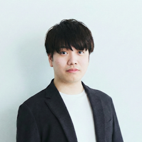

Freelance DX Consultant & Product Manager

Yuu Adachi
「徹底した顧客視点 × デジタル実装 × 組織変革」で企業の事業価値を最大化する、実効型DXコンサルタント。戦略策定からプロダクト開発・組織変革まで一気通貫で実行します。
飲食・小売業界での現場マネジメント経験を原体験に、テクノロジーで事業を変革するキャリアを歩んできました。カラオケチェーン運営会社では部長代理として、業界初の「受付レス予約システム」や自社専用デバイスのスクラッチ開発を主導。年間約20億円のコスト削減と過去最高益達成に貢献しました。
大手ドラッグストアチェーンでは1,500万DL規模のアプリのサービスオーナーとして、大手コンサルティングファームやデザインファームをマネジメントしながら、アジャイル組織への変革と生成AIのプロダクト開発プロセスへの実装を完遂。
2026年3月に独立し、現在は大手ドラッグストアチェーンのDXコンサルタント兼サービスオーナーとして、スマホレジやヘルスケアデータ活用等の最上流工程を牽引しています。戦略策定からシステム実装、組織変革までを一気通貫で実行できる「実効型コンサルタント」です。